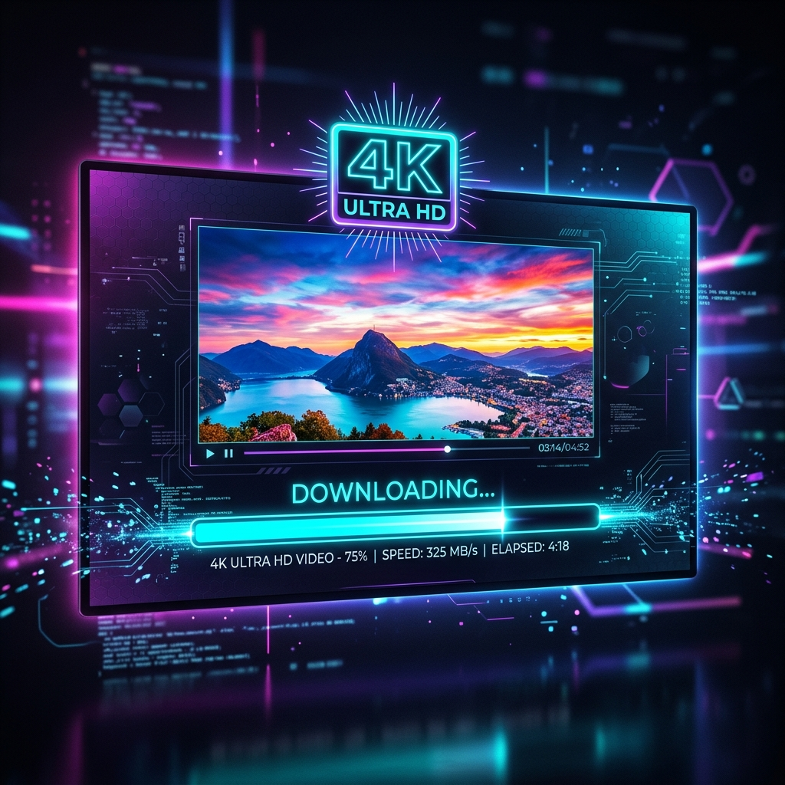

How to Download 4K YouTube Videos for Free (Step-by-Step Guide)

High-resolution video streaming is standard today. With 4K screens on laptops, tablets, and smart TVs, watching videos in 3840x2160 pixels (2160p) offers unmatched clarity. However, when you want to save these videos to watch offline, edit, or archive, you often run into a wall: standard online downloaders limit you to 720p or 1080p resolution.
In this guide, we'll explain the technical reasons why downloading 4K videos is difficult, how YouTube handles high-resolution streams, and how you can save 4K video streams for free using yt4ksaver.com.
The Technical Reason Standard Downloaders Fail at 4K
If you've used older YouTube downloaders, you might notice they cap your download resolution at 720p. This isn't a random limitation. It's because of how YouTube serves video streams.
Years ago, YouTube served "muxed" files—meaning the audio and video tracks were combined into a single file (like an MP4 file). Anyone could grab the link and download it directly. However, to save bandwidth, YouTube transitioned to DASH (Dynamic Adaptive Streaming over HTTP).
Under the DASH system, YouTube separates the video track and the audio track into two completely independent files:
- The video stream is stored without any audio, compressed with modern codecs like VP9 or AV1.
- The audio stream is stored separately, compressed as Opus or AAC formats.
When you watch a video in your browser, YouTube dynamically plays both streams together. For standard 720p video, YouTube still provides a pre-merged fallback file. However, for 1080p, 4K, and 8K, **no merged file exists on YouTube's servers**.
To download a 4K video, a tool must download the silent 4K video file, download the audio file, and then merge them together on a server using transcoding software like FFmpeg. Most online downloaders avoid this because transcoding 4K streams consumes heavy CPU and memory. yt4ksaver.com was designed to handle this backend merging safely and fast, delivering a complete, high-quality file to you.
Understanding 4K Video Formats & Codecs
Before downloading, it is helpful to understand the formats you will see. YouTube uses different compression standards for high-resolution videos to keep bandwidth low while preserving visual details.
| Resolution | Pixel Dimensions | Common Codec | Recommended Use Case |
|---|---|---|---|
| 4K Ultra HD | 3840 x 2160 | VP9 / AV1 | Smart TVs, high-end monitors, professional editing |
| 1440p (QHD) | 2560 x 1440 | VP9 | Gaming monitors, modern tablets, high-end smartphones |
| 1080p (Full HD) | 1920 x 1080 | H.264 / VP9 | Standard screens, mobile phones, general archiving |
How to Download 4K YouTube Videos with yt4ksaver
Downloading Ultra-HD files on our platform takes just a few steps:
- Copy the Video URL: Open YouTube, copy the link of the 4K video you want to download from your browser's address bar or the share button.
- Paste on yt4ksaver: Navigate to yt4ksaver.com and paste the link into the URL input box.
- Select 4K Resolution: Select the **4K (2160p)** option. (If you want to download only a specific portion of the video, use the built-in time-trimming feature).
- Download: Click the "Download" button. The server will grab the video and audio tracks, merge them using FFmpeg, and prompt you to save the completed MP4 or WebM file.
Frequently Asked Questions (AEO/GEO Optimized)